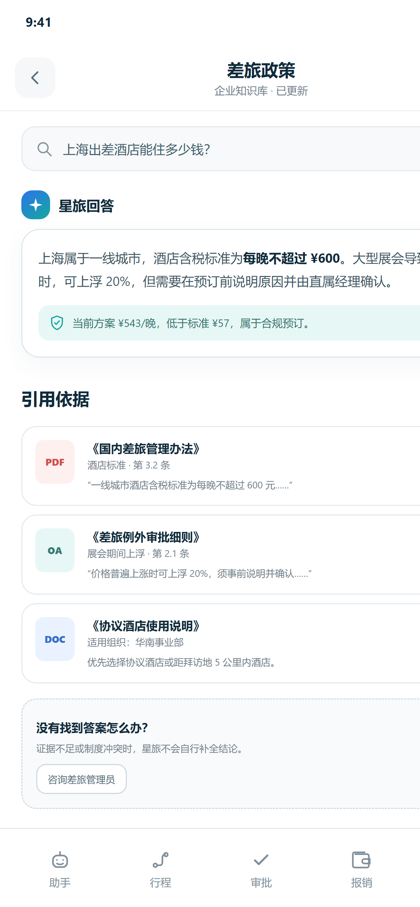
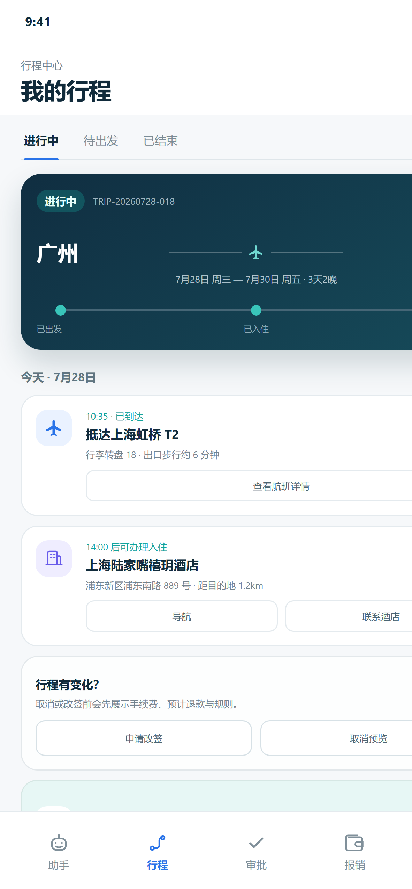
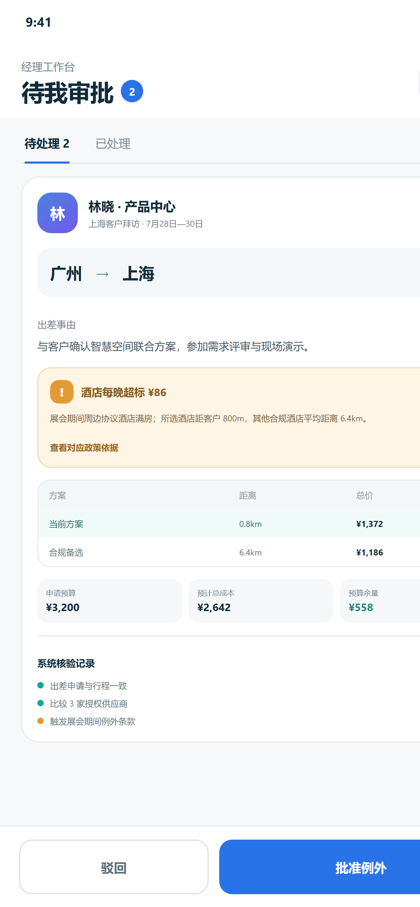

政策依据
答案标注文档、章节、版本和有效状态；证据不足或冲突时不自行补全结论。
政策结论可追溯，行中服务可触达，费用自动归集；异常与超标进入人工审批并留下完整证据。

答案标注文档、章节、版本和有效状态；证据不足或冲突时不自行补全结论。

集中查看航班、酒店与节点提醒；取消和改签前先展示手续费及预计退款。
自动归集机票、酒店和用车费用，完成发票验真、规则核验与报销预览。

审批人能看清超标原因、政策依据、备选差异与成本影响，再决定是否放行。